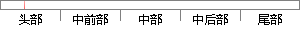

,在方位角和相对距离已知的情况下，坐标可以被解算出来。
片段位置图

相似结果|
1
原句片段：,在方位角和相对距离已知的情况下，坐标可以被解算出来。
相似片段 1：一、方位角的求算 已知A、B两点经纬度,如何求出B...1经度差所对应的球面距离是不一样的,例如,在赤道...各位可以将此法得到的计算结果与谷歌地球(WGS84坐标...
|
※ 片段修改建议 ※
近似词参考：- 相对：相对于
- 距离：间隔
系统自动生成语句：,在方位角和相对于间隔已知的情况下，坐标可以被解算出来。
注：本片段修改建议为系统自动生成，仅供参考。